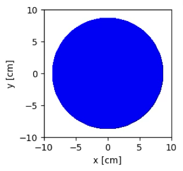
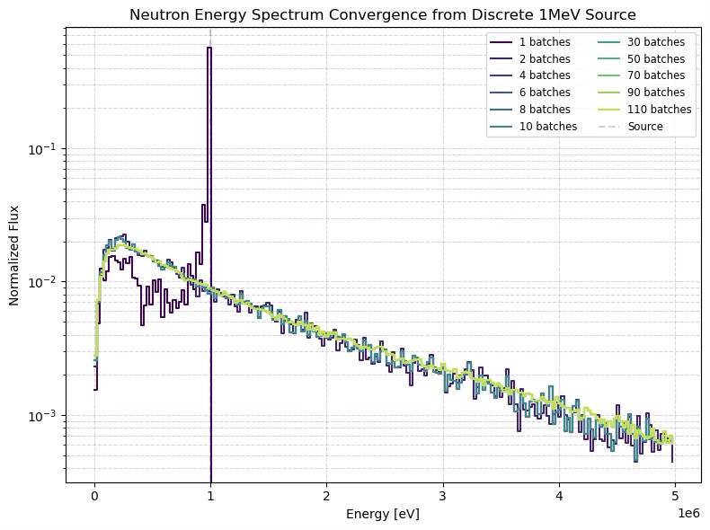
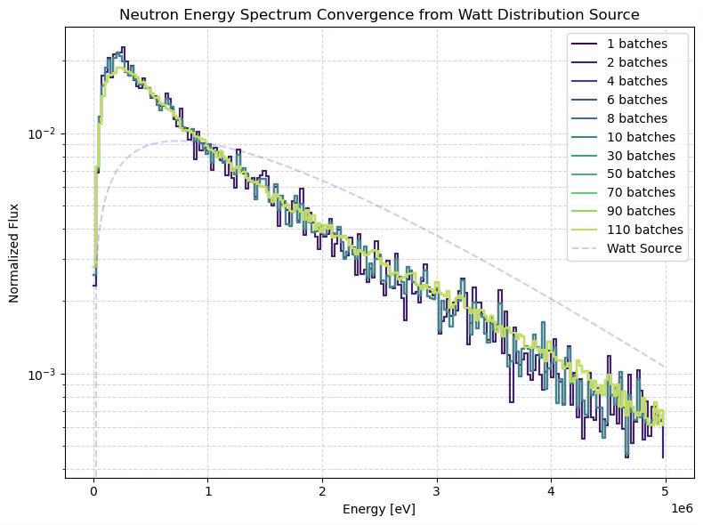
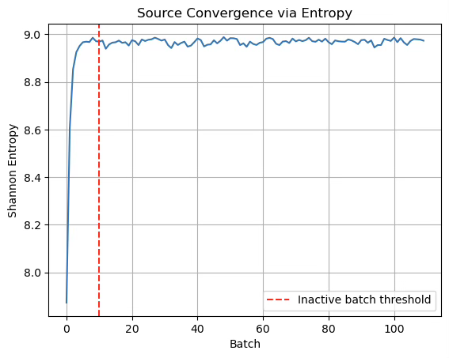
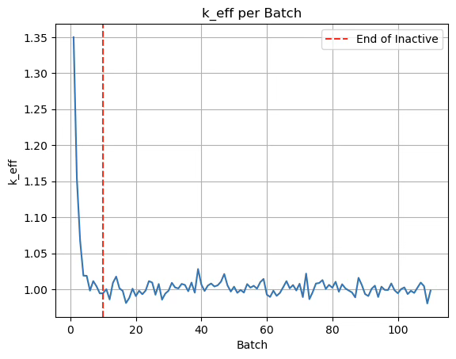

Introduction
This project models and analyzes the GODIVA critical assembly – a bare sphere of highly enriched uranium (HEU) – using OpenMC with the ENDF/B-VIII.0 nuclear data library. GODIVA is a well-documented benchmark used to validate neutronics codes and nuclear data in fast spectrum criticality scenarios.
The objective is to reproduce the benchmark effective multiplication factor (keff), compare results against trusted MCNP6 simulations, and analyze neutron flux distributions. This provides a practical validation of both OpenMC's simulation fidelity and the ENDF/B-VIII.0 nuclear data in a fast-spectrum system.
The project serves as a foundational step toward deeper engagement with nuclear simulation, numerical transport methods, and validation workflows.
Methodology
This simulation models the GODIVA critical assembly as described in Los Alamos National Laboratory's MCNP6 validation report [1]. To ensure comparability, the model reproduces the geometry, material composition, and simulation parameters used in that report, while implementing them in OpenMC.
Geometry
The GODIVA assembly is modeled as a bare sphere of HEU, with radius 8.741 cm centered at the origin.
Material Composition
The fuel is modeled as uniform highly enriched uranium (HEU) with the same atomic composition reported in the LANL study:
- 94.73 at% U-235
- 5.27 at% U-238
- Density: 18.74 g/cm3
All isotopic data are drawn from the ENDF/B-VIII.0 library, matching the version used in LANL’s "explicit ENDF/B-VIII.0" MCNP simulation.
Simulation Parameters
The OpenMC simulation mimics LANL's MCNP kcode setup:
- k-eigenvalue simulation criticality mode
- 10k particles per cycle
- 10 inactive cycles for source convergence
- 110 active cycles
- Point source at the sphere’s center
However, since OpenMC does not inherit source energy distributions automatically, an explicit source energy distribution must be defined.
To investigate which source distribution would be appropriate and converge in time for the end of the inactive cycles, I implemented an energy-dependent neutron flux tally using OpenMC's tracklength estimator and a fine energy grid from 0 to 5 MeV (200 bins). I then automated a script to run successive cycles reusing the previous run’s source file as the starting point, which allowed me to track the evolution of the neutron energy spectrum over simulation batches.
A monoenergetic 1MeV neutron source was chosen as a simplistic initial guess because it lies between the most probable energy of fission neutrons emitted from U-235 (~0.7 MeV), and the average energy (~2 MeV) [2]. While oversimplified, a monoenergetic source provides a controlled baseline to understand how the spectrum evolves from a non-equilibrium shape.
To more realistically emulate the physics of neutron emission from fission, I then opted for a Watt-distributed energy source using parameters a = 0.988e6 eV, b = 2.249e-6 eV^-1.
Although both source distributions converge within the designated 10 inactive batches, the Watt distribution aligned with the final equilibrium spectrum faster, as expected.
The final converged spectrum exhibits the expected qualitative shape—resembling a Watt-like distribution—but peaks below 0.7 MeV. This is consistent with the nature of the flux tally: it reflects the equilibrium neutron flux rather than the neutron production spectrum. As neutrons scatter, they gradually lose energy. This down-scattering leads to a buildup of neutron population at lower energies.
To inspect the convergence of the neutron source distribution, a Shannon entropy mesh was implemented. At each cycle, OpenMC calculates the entropy of the fission source distribution within this mesh. A plateau in the entropy values indicates that the spatial distribution of the source has stabilized.
Similarly, k_eff was monitored across batches to confirm convergence.
The stabilization of k_eff near 1.0, along with the plateau observed in the entropy plot, provides strong evidence that the system reached equilibrium during the inactive cycles, thereby reinforcing confidence in the simulation settings.
Results
| Source | keff | Std Dev | 95% CI | z-test |
|---|---|---|---|---|
| Experimental Benchmark [1] | 1.0000 | 0.0010 | 0.99905 – 1.00095 | - |
| LANL (MCNP6) | 0.9999 | 0.0002 | 0.99971 – 1.00009 | 0.098 |
| OpenMC | 1.0011 | 0.0006 | 1.0005 – 1.0017 | 0.926 |
The OpenMC result demonstrates good agreement with the experimental benchmark, with a z-score < 1.96 indicating no statistically significant difference at the 95% confidence level. LANL's MCNP6 result agrees even more closely (z = 0.098), suggesting excellent consistency with the benchmark.
The slightly better performance of MCNP may be attributed to its ability to initialize simulations with an estimated keff value, potentially enhancing convergence and statistical precision.
Improvements
To further improve the precision of the OpenMC simulation results the number of particles per cycle was increased from 10,000 to 100,000. This increase enhances convergence and lowers the Monte Carlo noise, improving result precision without altering model fidelity.
Additionally, a more realistic source distribution was considered—specifically, a gradient source model with higher neutron density near the core center and lower density toward the periphery, reflecting the expected fission source profile. However, this seemed redundant considering our confidence in the convergence of the source distribution before the start of the active batches.
With the increased number of particles per cycle, the OpenMC simulation produced a refined combined keff value of 1.00096 ± 0.00023. While this result is slightly closer to the benchmark value of 1.0000, the reduced statistical uncertainty leads to a slightly higher z-score of 0.936. Nonetheless, the result remains well within the 95% confidence interval (∣z∣< 1.96), confirming good agreement with the experimental benchmark, despite a statistically significant difference to the MCNP results.
References
- LANL Report LA-UR-19-23348
- Fission Neutron - an overview | ScienceDirect Topics
- ICSBEP Benchmark Handbook